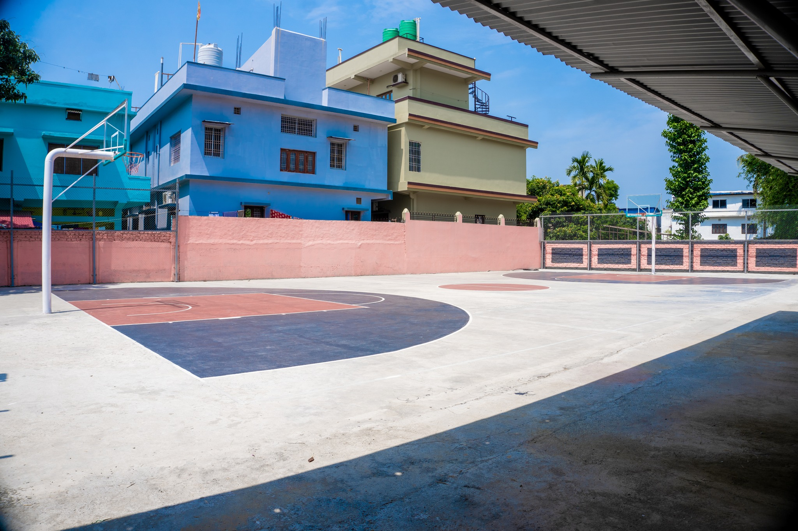
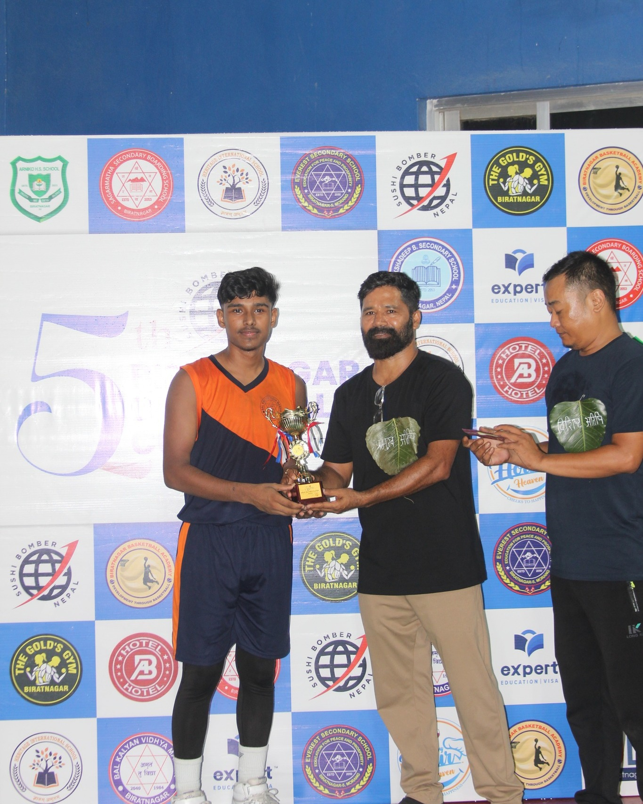

Hi guys! My name is Aakash Goit. I am 18 year old.
I have started my basketball journey from Nepal when I was 15 years old.
I started playing basketball when I was in 10th class.
I used to stay at hostel before I never stayed in it.
After completing my day class I used to rush to the basketball court.
My seniors always used to play there and i always observe them playing.
When they used to finish their game I always request them to give the ball for shooting.
The main thing is I dont how to layup I always observe my seniors that they carry the ball and run towards the ring.
After observing them I also started doing the same layup.
We have only 1 basketball court in our school so we dont get enough time to practice.
After someday our basketball coach told us about the upcoming 3rd Biratnagar Basketball Tournament.
He started the training for the selection.
More then 30 students came in the first training day.
I was not so confident that I can select for the tournament. But somehow I selected in my school team for the selection.
I was very happy that i can play that tournament.
For that tournament i have praciced very hard.
But also I can't give competition to my school friends.
They were playing baskeball from class 6.
When the game started I was very much nervous because it was my first game.
In the whole tournament I only scored one basket. I was very happy that atleast I score one basket.
The final game was so interesting. We won the tournament.

This was the court where we played the tournament and also we won there.
After some months our seniors passed out the collage the we started playing everyday.
After someday we have to stop playing due to our 10th board exams for more than 2 months.
After the examination, in the 3 month vacation morning I used to go to bride course and in the eveining i uesd to go to practice basketball.
After the vacation my class 11th started.
Me and my friends started practicing for the upcoming 4th Biratnagar Basketball Cup.
We all friends khow about he selection that who will be selected and who will not be selected.
In the First day of the tournament i was still nervous and afterthat I got a chance to play in the playing five.
In the first day i did something unexpected that was not expected by me.
I score 2 3rd point and 4 basket in the match.
In that i scored 14 points and become the MOM (Man Of the Match)
I was mery much happy that day.
All my nervousness disappered like nothing happened.
After a week we won that tournament also.
Not any team in the city can beat our college team.
We always used to practice hard while practicing.
In the same year, We got a opportunity to play U-18 baskeball and represent our province.
We travelled for 1 day to reach the destination. The U-18 tournament was held in Kritipur,Kathmandu.
We were very much excited for the game and we already know that this game is not going to be easy.
We both team were ready for the game. the score was being equal 1 up and 1 down after the break time they took a lead of 14 then after they won the match and we lost.
Our team was not good enough to beat them they look like very senoirs but also we dont loose our hope. We tried our best.
The game was not do or die it was a league match so there was a next game also left for the next day.
We loose another match too. My team member were also very sad but can't do anything.
Our coach told us that no problem you guys have given your best.
First time my ankle twisted in class 11. It was very painful. I can't stand properly because of the pain.
I tooked 3 months to recover properly. The 3 month was really so painful.
In that 3 months 2 tournament I have played named Hissan and Pabson
I can't play well because I was injured but my teammates were there not any single game we loose.
After all that we gave our 11th examination. We passedout and went to class 12.
We were the senoir of the school. My another ankle twisted and I was like shit 5th Biratnagar Baskeball Cup was comming and i was injured but i didnt give up.
We lost one game with team sagarmatha it was a league game so it doesnot mean to anyone but me and my teammates were so upset with our own performance.
We have one more game with team sagarmatha we defeated them easily. Our luck was so good that we meet again in the final game.
This was the time to take revenge.
We gave our best and in the final game i scored more than 19 point (5 3rd point and 2 or 3 layups).
My friend became MOM(Man Of the Match) and I became MVP(Most Valueable Player)

I was very much happy and I was thikning that "Perfect Practice Makes Man Perfect".
From that day children's kept my name shooter.
In next hissan also I became MVP(Most Valueable Player).
After that I played more games representing proviences.
Currently I am in Gujarat,India and I am playing baskeball here also.
This is how I am continuing my baskeball journey.